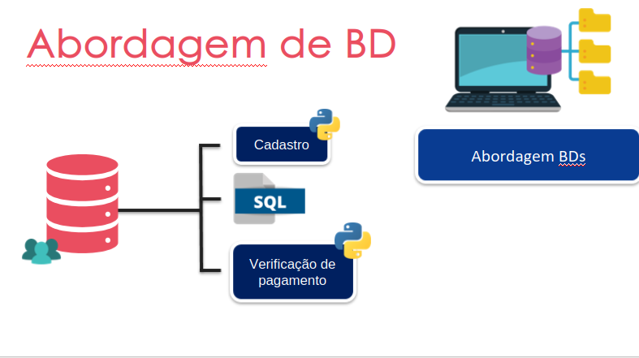
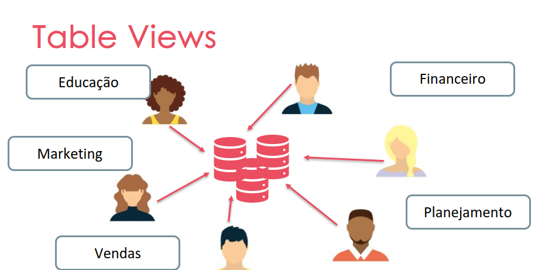
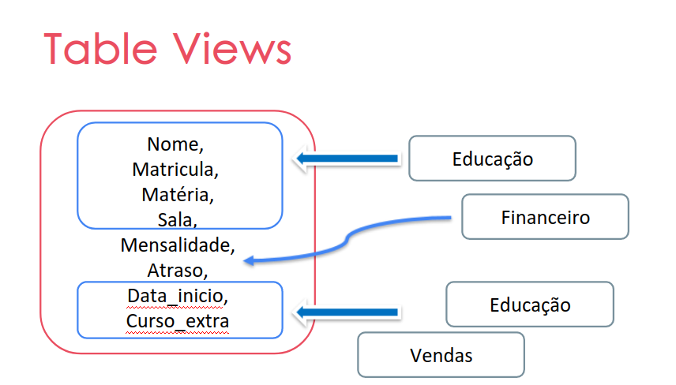

Fundamentos de Banco de Dados
Introdução a Banco de Dados
O que são bancos de dados?
Conjunto de dados que transmitem informação
- API - trás a informação solicitada
- Ações - solicitação das informações
- Possuem diversos tamanhos
Sistema de Gerenciamento de Banco de Dados
-
Definição - Mini mundo
- Tipo de dado
- Estrutura
- Constrains
-
Construção
- Inserção dos dados - persistência
- Mapeamento
-
Manipulação
- Recuperação de informações
- Geração de relatórios
-
Compartilhamento
- Simultaneidade
- Acesso
OBS: Proteção 1. Persistência 2. Acesso
Breve histórico de SGBDs
Linha do tempo
- 1960 - Conceito
- 1970 - Modelo relacional
- 1970 - Democratização da tecnologia
- 1990 - Paradigma de Orientação a Objeto
- 2000 - NoSQL
Modelo relacional
- Surgiu com a ideia de diminuir custo com pessoal e garantir maior consistência dos dados
- Estrutura de tabela, de maneira mais generalista
- SQL - Linguagem de consulta (ISO/IEC 9075)
Modelo hierárquico
- Sistema de gerenciamento voltado a registros
- Busca em árvore
Modelo em Rede
- Busca em grafo
- Precisa conhecer como ele funciona
Modelo de Banco de Dados Relacional
Tradução -> mecanismos de execução -> gerenciador -> metadadso e schema
Características
- Álgebra relacional
- Relações
- TAD para armazenamento
- Transparência
Usuários
- Convencional
- Altera e extrai informações
- LMD (linguagem de manipulação dos dados)
- Administrador do BD (DBA)
- Defini a estrutura e constrains (regras) - Determina as tabelas, as entidades, atributos e comandos
- Comandos traduzido pelo processador LDD (linguagem de definição de dados)
Storage e Buffer
Como tenta lidar com os dados de forma mais performática, é importante:
- Gerenciador de armazenamento - HD → RAM
- Gerenciador de Buffer - RAM → HD
Integração
- É possível usar mais de um BD na aplicação, unindo os benefícios de cada.
- Repositórios centralizados - Data Warehouses
- Mediadores - Middleware
SGBDs mais utilizados pelo mercado
Ranking
- Oracle
- MySQL
- SQLServer
- PostgreeSQL
- MongoDB
- Redis
- ElasticServer
- IBM Db2
- Microsoft Access
- SQLite
- Snowflake
- Cassandra
- MariaDB
Fonte: https://db-engines.com/en/ranking (Julho de 2023)
Considerações para o projeto da Finatec
- MySQL é opensource, tem bastante conteúdo por ser um SGBD muito usado para iniciantes;
- PostgreeSQL é opensource é muito indicado para mexer com pyhton
- Redis é opensource não relacional com um bom desempenho, sendo bem escalável
- Cassandra é openssource, não relacional, distribuído, altamente escalável e eventualmente consistente
Sistemas de Gerenciamento de Banco de Dados
Abordagem de SGBDs versus Abordagem Tradicional
Por que utilizar o SGBDs? Quando tiver um dado modificado, a aplicação devem ser alteradas Mantém a estrutura de dados no sistema
| Tradicinal | SGBD |
 |
 |
Características principais do SGBD
- Abstração
- Autodescrição
- Isolamento
- Compartilhamento
- Múltiplas visões
- Transação multiuser
Natureza Auto-descritiva da Abordagem de Banco de Dados
- “Descrição de mim mesmo”
- Descrição da sua estrurura e regra
- Schema - Estrutura bem definida sem a inserção dos dados
NoSQL
- Não possuem uma estrutura específica, por já possuirem uma descrição
SQL
- Precisa dos metadados e o schema
Isolamento Program/data e Abstração
Isolamento
- Importante para a manutenção do sistema
- Evita as alterações na aplicação
- Vem pela estruturação dos catálogos
 |
 |

Abstração
- Generalizar os objetos e contexto
|  |  |


Suporte à Múltiplas Visões dos Dados
- “Perspectivas distintas de um mesmo conjunto de dados”
- Cada setor esta interessado em um tipo de informação
Compartilhamento de dados e Processamento de Transações Multiusuários
- Controle de concorrência (Concurrency Control)
- Mecanismo de controle de acesso de várias pessoas
- Múltiplos acessos - Proteção para evitar a alteração de dados “ao mesmo tempo”
OLTP
- Processamento de Transações Online
- É um tipo de processamento de dados que consiste na execução de várias transações que ocorrem simultaneamente
- Gerencia as trransações concorrentes
- Não pode travar
- Ou executa tudo ou volta e executa nada - Precisa ser capaz de retroceder
- Decisões orientados a translações
- Ex: Transações bancárias online, compras, entrada de pedidos ou envio de mensagens de texto
 |
 |
 |
 |
OLAP
- Online Analytical Processing
- É uma tecnologia usada para organizar bancos de dados de grandes empresas e dar suporte a business intelligence
- Ele pode ser usado para executar consultas analíticas complexas sem prejudicar sistemas transacionais.

Atores em Banco de Dados
Cenário
- BDs simples → 1 ou poucos pessoas
- Big Organizations → +10k
Atores
-
Designer
- Identificar dados e requisitos
- Representação e Estrutura
- Fase preliminar - Elaboração do banco
-
Administradores (DBA)
- Gerencia os recursos (base de dados, SGBD, softwares adicionais)
- Orquestração os sistema
- Autorização de acesso
-
Usuários Finais
- Propósito do SGBDs (atender a estes usuários)
- Acesso → Querying (uipdate, reports)
- Categorizados
Categorias de Usuários Finais
-
Casuais
- Acesso ocasionais
- Diferentes informações
- Uso de APIs
-
Sofisticados
- Cientistas, engenheiros e analistas
- Puxam as informações dos BD
-
Standalone
- BD pessoal
-
Ingênuos
- Considerável porção - Não possui noção de BD
- Erro: raro
- Canned Transactions: Encapsulados por programção (API gráfica)
- EngenheiroS de Software - desenvolve o sistema que acessa o BD (análise de sistema, desenvolvimento da aplicação, teste e produção da aplicação)
Workers em background - Banco de Dados
Atores do sistema que da suporte ao BD quem mantém o SGBD disponível para usarem.
-
Designer do Sistema de SGBD e Implementação do SGBD
- Fornecem o ambiente e suporte para BD
- Implementação dos módulos e interfaces do SGBD como um software package
- Base
-
Pessoal de operação e manutenção
- Responsável pelo ambiente de hardware e software para o SGBD
-
Desenvolvedores de ferramentas
- Ferramentas opcionais para diversos fins
- Performance, modelagem (segurança), análise
Vantagens de Utilizar a Abordagem de SGBDs
- Controle de redundância
- Restrição de acesso
- Provendo persistência
- Estrutura de armazenamento e técnicas de busca
- intuitivas
- Técnicas de performace: Caching, buffering e indexação (dados recorrentes)
- Backup e Recovery
- Recuperam recursos perdidos
- Confiança e disponibilidade
- Multiusuário
- Interfaces adaptadas ao tipo de usuário
- Representação de relações complexas
- Integridade de dados
- restrições
Ganhos em utilizar SGBDs
-
Padronização
-
Redução de tempo no desenvolvimento da aplicação
- Flexibilidade
- Disponibilidade de info up-to-date
- Economia de escala
Quando não usar SGBDs
- Custo x Benefício
- Investimento
- Generalidade na definição e processamento
- Segurança, controle de concorrência, recovery, funções de integridade
Modelagem de Dados para Banco de Dados

Introdução à Modelagem de dados
Modelagem
Possui foco na descrição e relacionamento dos elementos que compõem a representação do contexto (mini-mundo)

Modelos de alto nível
Entidade-Relacionamento
- Mais fácil do cliente entender

UML (Linguagem de modelagem unificada)
- Mais descritivo para o desenvolvimento
 |
 |
Inserindo as informações
Linguagem declarativa - SQL

Como acessar?
- Interface gráfica
- Terminal
- Linguagem de programação
Instalando MySQL no Ubuntu
No terminal:
sudo apt-get updatesudo apt-get upgradesudo apt-get install mysql-serversudo apt-get install mysql-clientmysql --version(verifica a instalação)sudo systemctl status mysql.service(vendo o status se esta iniciado)sudo mysql(acessa o mysql)show databases;(visualiza os dados)exitsudo apt-get updatesudo apt-get upgrade- Reinicia o PC
Qual BD escolher?
Conforme o conteúdo estudo e colocado neste documento, o uso de um banco de dados é essencial, considerando que evitaria redundância e retrabalha no projeto.
Acredito que as melhores opções são o MySQL e o PostegreSQL por serem BD de dados opensource, relacionais que permitem que tenhamos multiusuários ao BD. Considerando que teriamos um administrador e diferentes funcionários da FINATEC que fariam uma consulta. Além disso, esses sistemas relacionais já possuem controle de acesso e demais funções que iriam facilitar no desenvolvimento, além dadocumentação disponível que auxiliaria.
Na última reunião o pessoal da TI passou a informação de que já existe um BD próprio, assim, não teríamos que construir um do zero mais. No dia 09/08 iremos visitar a FINATEC e conhecer os sistemas e o pessoal. Assim, o estudo do BD deve focar na requisição e não mais na construção.
Histórico de Versão
| Data | Versão | Descrição | Autor | Revisor | Issue |
|---|---|---|---|---|---|
| 30/06/2023 | 1.0 | Criação do documento | Raquel | Hemanoel | #22 |